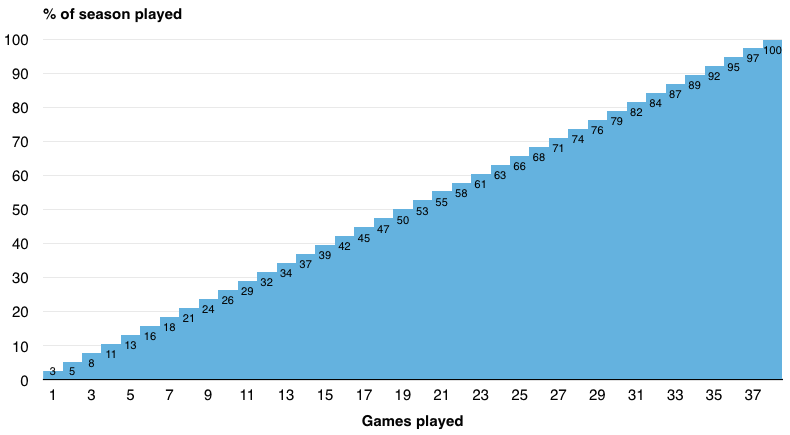
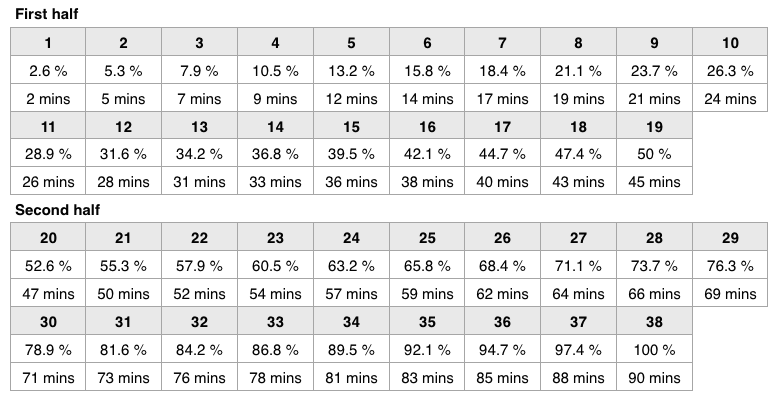

How to read the league table
The league table does not lie, football wisdom says, but the league table only tells us the truth at the end of the season. The early season table does lie a lot!
To review the basics: a league table counts cumulative points after cumulative rounds of matches, which means that the significance of the league table is cumulative too.
Being 1st in the table after 12 games means less than being 1st after 22 games. A 3-point gap after 12 games is relatively a smaller gap than a 3-point gap after 22 games.
A simple method of measuring the significance of the league table is to look at the percentage of games played.
After 2 of 38 games, the season is 5.3% old. And the league table after 2 games therefore about 5.3% relevant.
After 19 games played, at half-time, which usually falls into the period between Christmas and New Year’s, the league table begins to make sense.
Personally, however, I hesitate to take the league table too seriously until match-day 25 or 26, when two-thirds of the season have been played.
If percentage figures seem too abstract, then consider the league season in terms of a 90-minute football match.
9 games played in a 38-game season amounts to 23.7%. Transferred to a 90-minute game, 23.7% is the equivalent of being in the 21st minute of a match.
When a team is 1-0 up after 21 minutes most football fans know that a lot of football still needs to be played, and a lot could happen. It would be pre-mature to celebrate winning the match.
After 26 games, or in the 62nd minute, confidence might grow, but few fans would celebrate this early. Yet, maybe because the league season operates on a larger time-scale and humanity is impatient, every year some fans and pundits already feel like calling title or relegation favourites after 26 games or so.
In short: Try to ignore the league table until January!
¶